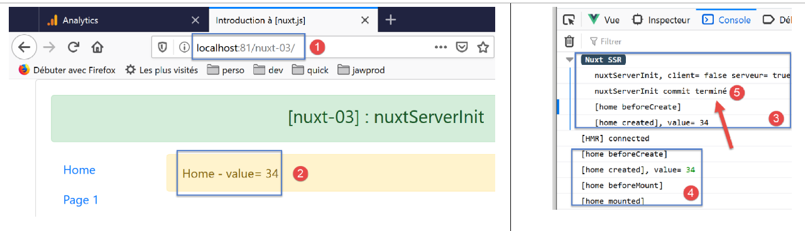
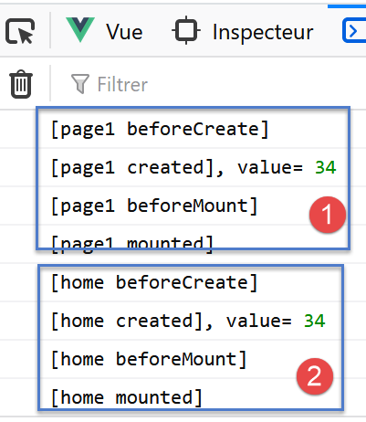

6. Exemple [nuxt-03] : nuxtServerInit
Le projet [nuxt-03] vise à présenter une fonction du store [Vuex] appelée [nuxtServerInit]. Elle permet au serveur d’initialiser le store [Vuex] comme le fait la fonction [fetch]. Mais contrairement à la fonction [fetch], la fonction [nuxtServerInit] n’est jamais exécutée par le client.

Le projet [nuxt-03] est initialement obtenu par recopie du projet [nuxt-01] duquel on supprime la page [page2] du dossier [pages] et du composant [navigation]. Le dossier [store] est obtenu par recopie du dossier [nuxt-02/store].
6.1. Le store [Vuex]
Le store [Vuex] sera implémenté par le fichier [store/index.js] suivant :
- lignes 1-12 : sont analogues à ce qu’elles étaient dans le projet [nuxt-02] ;
- lignes 14-32 : on exporte un objet [actions]. C’est un terme réservé du store de [Vuex] ;
- ligne 15 : on définit la fonction [nuxtServerInit]. Celle-ci sera exécutée au démarrage de l’application par le serveur. Son rôle usuel est d’initialiser un store [Vuex] à l’aide de données externes obtenues avec une fonction asynchrone. [nuxt] attend que celle-ci rende ses résultats avant d’entamer le cycle de vie de la page demandée. La fonction reçoit deux paramètres :
- le store [Vuex] à initialiser ;
- le contexte [nuxt] du moment ;
- lignes 19-26 : on attend la fin de l’action asynchrone, ici une attente artificielle d’une seconde (ligne 15) ;
- ligne 28 : on donne au compteur la valeur 34 ;
- lignes 17 et 30 : des logs pour suivre le déroulement de l’exécution de la fonction [nuxtServerInit] ;
6.2. La page [index]
La page [index] sera la suivante :
- ligne 37 : la valeur du compteur initialisé par la fonction [nuxtServerInit] est affectée à la propriété [value] de la ligne 27. Cette valeur est affichée par la ligne 7 ;
- la ligne 37 sera exécutée aussi bien par le serveur que par le client. Dans les deux cas, la propriété [value] recevra la même valeur ce qui assure l’identité de la page générée par le serveur avec celle générée par le client ;
6.3. La page [page1]
La page [page1] est obtenue par recopie de la page [index]. On modifie ensuite son texte pour remplacer [home] par [page1] :
Cette page n’est là que pour rendre possible la navigation entre deux pages.
6.4. Exécution
Le fichier [nuxt.config.js] est modifié de la façon suivante :
La page affichée à l’exécution est alors la suivante :

- en [5], on voit que la fonction [nuxtServerInit] a été exécutée par le serveur avant le cycle de vie de la page [index]. [nuxt] a attendu que la fonction asynchrone ait terminé son travail avant de passer au cycle de vie ;
- en [4], on voit que le client n’a pas exécuté la fonction [nuxtServerInit] ; Maintenant naviguons deux fois : index --> page1 --> index. Les logs sont alors les suivants :

- en [1-2], on voit que la fonction [nuxtServerInit] n’est pas exécutée par le client ; Maintenant tapons l’URL de la page [page1] à la main pour forcer un appel au serveur :

en [3-4], on retrouve le même mécanisme que celui qui avait précédé le chargement de la page [index] au démarrage. On rappelle ici ce qui a déjà été dit : lorsqu’on force l’appel d’une page au serveur, tout se passe comme si l’application redémarrait avec une page d’accueil qui serait la page demandée ;